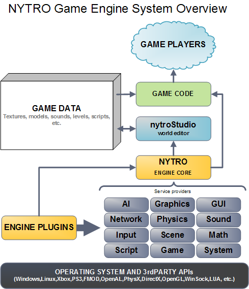

Introduction to the Nytro engine concepts and subsystems
- General information
- Engine subsystems details
The Nytro Game Engine is based on a plugin arhitecture to drive its subsystems, loading Dynamic Link Libraries, DLL files, with the custom file extension *.nyp , so the engine only loads DLL files with that extension.
Providers - these are special plugins for each major subsystem of the engine, so we have graphics provider, audio provider, network provider, physics provider, stream provider, input provider, AI provider, script provider and a special one, game provider who is actually the game code ( known from other engines as game.dll ).
For example we can have more than one provider for a specific subsystem and we can load one or another (Direct3D or OpenGL, FMOD or DirectSound, PhysX or ODE).
First let us analyze the SDK folder structure (some folders you probably do not have, depends on your access/license):
3rdparty - 3rdparty libraries, like CURL, zlib, DevIL, Lua, etc.
bin32 - release mode binaries for 32bit OS
bin32d - debug mode binaries for 32bit OS
bin64 - release mode binaries for 64bit OS
bin64d - debug mode binaries for 64bit OS
data - current game data, you can have many of these folders like MyGame, TheAwesomeGameData, etc., data for your games
documentation - documentation of the engine, CHM and HTML files
editor - this folder holds editor data, like icons, temporary files, editor UI settings
examples - engine usage examples source code
include - core engine C++ include files
libraries - various 3rdparty and nytro core library files
plugins - source code for the plugins (Direct3D provider, FMOD provider, etc. )
setup - setup source files for distribution of the engine SDK
source - core engine source files
tools - source files for the editor and tools
workspace - VisualStudio solution and make files for core engine
The binaries contain the nytro.dll core engine file, various 3rdparty library dlls, NytroStudio.exe world editor.
Engine subsystems details
This is the Nytro Game Engine architecture:

- AI
- the engine's Artificial Intelligence classes
- includes A* pathfinding and planning algorithms
- Graphics
- the engine has a GraphicsProvider base class which is used as parent by the Direct3D plugin or the OpenGL plugin;
- the graphics namespace contains classes for vertex buffers, textures, images, video devices, instancing, shaders, animation, movie player, render states
- Audio
- the audio subsystem is handling all the sounds in the game
- it has a sound class and sound blocker geometry
- cross fading between music / soundtracks (idle-battle)
- Editor
- editor interface class, editor tool plugin base class and other classes used by the Nytro editor
- Game
- from here you derive your actual game code
- game provider, game states (play,menu,loading,intro)
- game entity base class
- world class, to load levels full of entities
- flow graph engine for visual scripting and game logic
- various handy classes for game code (FpsCameraController, RtsCameraController, TpsCameraController)
- GUI
- user interface system, UI manager, widgets
- Input
- user input from mouse, keyboards, joypads, joysticks, wheel or other input devices
- action - controller binding, mapping keys to actions, example: "fire"="LClick,Ctrl"
- combo actions
- Math
- mathematical functions and classes
- vector, quaternion, matrix, axis aligned box, object aligned box, ray, plane
- Network
- networking, for LAN or internet, network packet, client/server, UDP and TCP/IP
- Physics
- physics computations, with a plugin for NVIDIA PhysX
- rigid bodies, ropes, soft bodies, joints, breakable bodies, terrain patches
- Scene
- the scene graph which holds high level scene nodes in a hierachy
- scene nodes: model, camera, hash spacing, octtree, particle system, render pipeline, sky dome, special effect, terrain
- Script
- scripting for the engine, currently using LUA
- System
- various general purpose utility classes and functions
- application, auto pointer, base class with RTTI and property system, code coverage, command console functions
- dynamic libraries, exceptions, engine core functions, localization, logger, observer, performance profiler
- plugins, resource manager, statistics, stream provider, threading, timer, variants, XML loader/saver, string utils